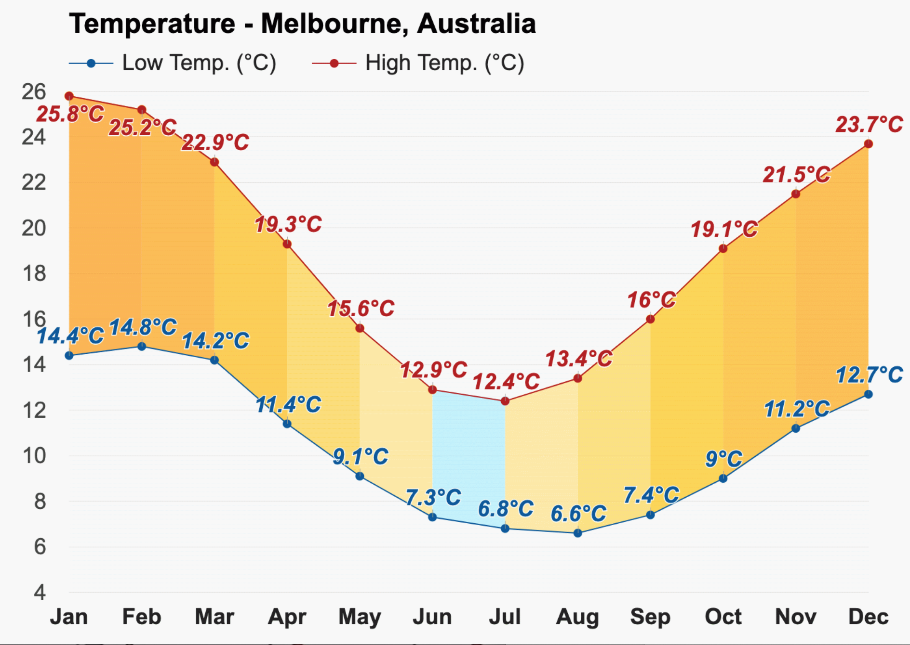

Temperature 
January is the warmest month, with an average high-temperature of
25.8°C (78.4°F) and an average low-temperature of 14.4°C (57.9°F).
With an average high-temperature of 12.4°C (54.3°F) and an average
low-temperature of 6.8°C (44.2°F), July is the coldest month.

With an average of 9.8h of sunshine, December has the most sunshine
of the year.The months with the least sunshine in Melbourne are July
and August, with an average of 6.5h of sunshine.
Rain
In Melbourne, during the entire year, the rain falls for 163.4 days
and collects up to 465mm (18.31") of precipitation.

With an average relative humidity of 80%, June is the most humid
month in Melbourne, Australia. The months with the most rainfall are
August and December, with an average 45mm (1.77") of precipitation.
The least humid month in Melbourne is January, with an average
relative humidity of 63%. March and April are months with the least
rain in Melbourne, Australia, when the rain falls for 12.8 days and
typically aggregates up to 34mm (1.34") of rain.
Wind

* The above information is sourced from Weather-At. Take a
visit for
more information...
Population
5,151,000 (Metro)
Median Age 36
Ancestry
The most common ancestries in Melbourne were Chinese 32.6%,
English 10.2%, Australian 6.1%, Indian 5.4% and Irish 3.7%.
Country of birth
In Greater Melbourne, 59.8% of people were born in Australia. The
most common countries of birth were India 3.6%, China (excludes
SARs and Taiwan) 3.5%, England 3.0%, Vietnam 1.8% and New Zealand
1.8%.
Religion
According to the 2021 Census, persons stating that they had no
religion constituted 36.9% of the population.Christianity was the
most popular religious affiliation at 40.1%. The largest Christian
denominations were Catholicism (20.8%) and Anglicanism (5.5%).
The most popular non-Christian religious affiliations were Islam
(5.3%), Hinduism (4.1%), Buddhism (3.9%), Sikhism(1.7%) and
Judaism (0.9%).
* The above information is sourced from
Australian Bureau of Statitics. Take a visit for
more information...
Skate and BMX
Over the last 20 years there has been a significant growth in the
interest and participation of action sports such as skateboarding
and BMX.
Albury Skate Park
Thurgoona Skate Park
Springdale Heights Pump Track
Boat ramps
There are five boat ramps in the Albury region, with access to
either the Murray River or Lake Hume. All ramps offer easy access to
the water as well as nearby services.
Lake Hume Village Boat Ramp
Kremur Street
Mungabareena Reserve
Walking and cycling trails
Albury has more than 50 kilometres of interlinked on and off-road
trails, offering walkers and cyclists of all ages, safe and
enjoyable access to our natural environment and places of interest.
Heritage Walk
Nail Can Hill / Ridge Trail
Bungambrawatha Creek Trail
Rainforest Walk
* The above information is sourced from
Albury City Government. Take a visit for
more information...